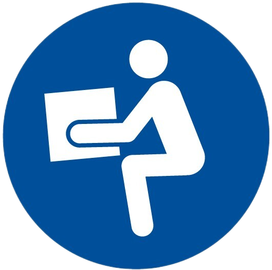

Desde este punto de vista, podemos diferenciar los siguientes grupos de enfermedades:
Intoxicaciones: enfermedades  producidas por la acumulación de sustancias venenosas en el cuerpo, en dosis suficientes para producir trastornos. El agente causal es de tipo químico, actuando en el organismo por vía respiratoria, digestiva o cutánea. Sus efectos pueden ser agudos, si la dosis de tóxico es elevada, o crónicos, producidos por la acumulación paulatina de pequeñas cantidades. Según su naturaleza, pueden distinguirse tóxicos orgánicos (ácidos, alcoholes, disolventes, etc.) y tóxicos inorgánicos: mercurio, plomo, cromo, níquel, berilio, etc. Dominio público. Peligro mortal
Neumoconiosis: grupo de enfermedades respiratorias provocadas por la inhalación y fijación en los pulmones de partículas de polvo y fibras en suspensión. Pueden ser originadas por sustancias minerales (polvo de sílice, de hierro, etc.), vegetales (algodón, lino, etc.) y animales  (pelos, plumas). La más conocida es la silicosis, enfermedad profesional de los mineros por excelencia. Dominio público. Uso obligatorio de máscara
Enfermedades producidas poragentes físicos: ruido, temperaturas inadecuadas (frío o calor), presión, radiaciones ionizantes (radiactividad) y no ionizantes (infrarrojas, ultravioleta, láser), etc.Dominio público. Peligro radiaciones
Otras enfermedades: enfermedades óseas, motivadas por posturas inadecuadas al trabajar (lesiones de columna, en las rodillas, lumbago, etc.); las llamadas “fracturas por desgaste”, típicas de los trabajadores que utilizan herramientas que producen vibraciones (martillos neumáticos, remachadoras); hernias, provocadas por un importante y brusco esfuerzo físico; nistagmo de los mineros, consistente en espasmos involuntarios de los ojos producido por trabajar en recintos poco iluminados, etc. 
Dominio público. Obligatorio correcta manipulación manual de cargas